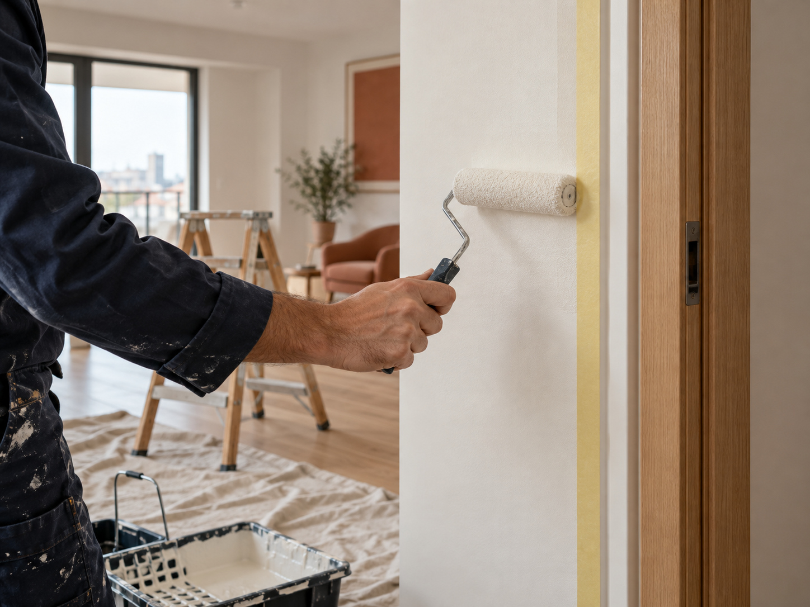

Peinture & finitions
Une pièce nette, jusque dans les détails.
- Préparation légère des supports
- Peinture murs et plafonds
- Retouches et reprises localisées
- Finitions autour des portes et plinthes